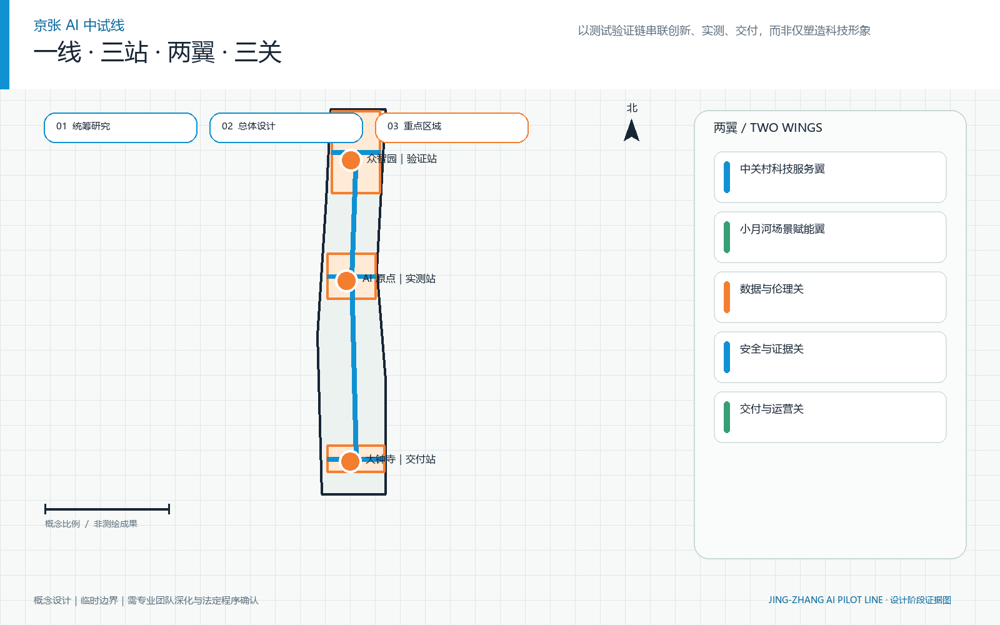
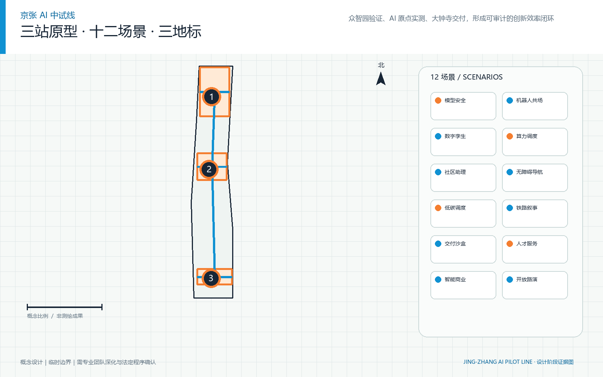
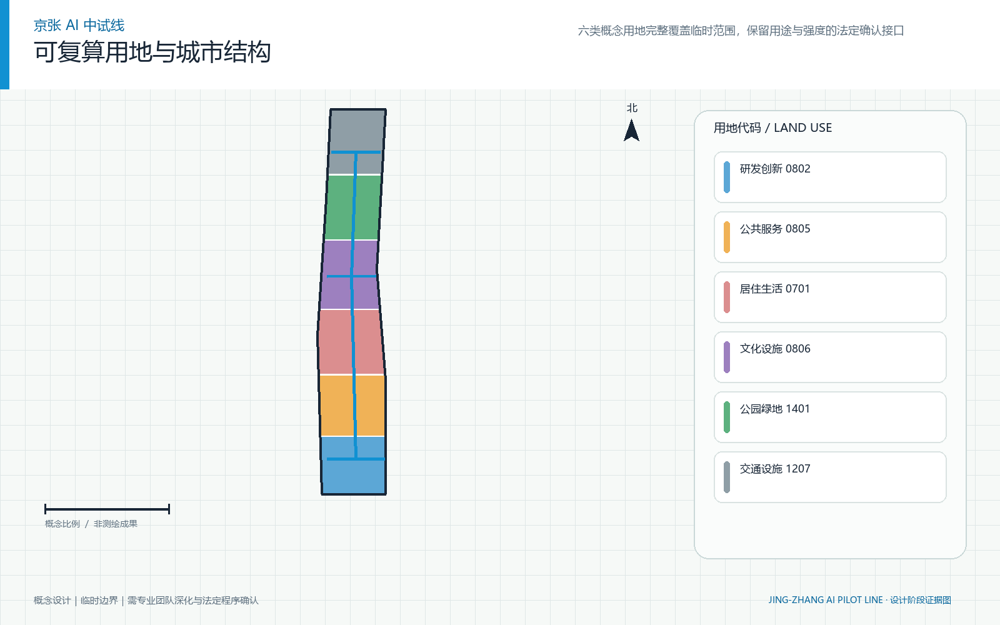
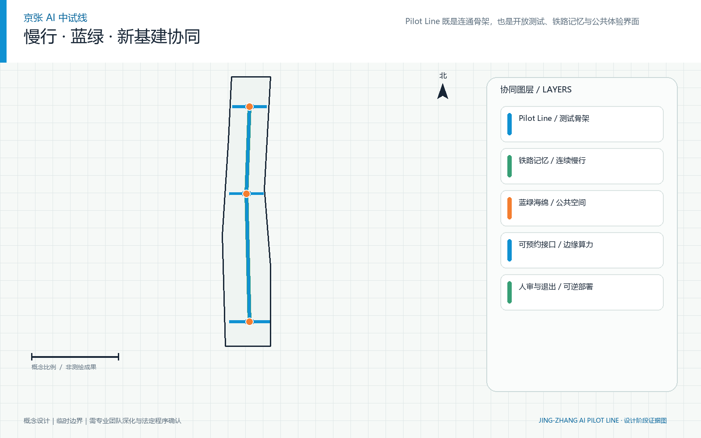
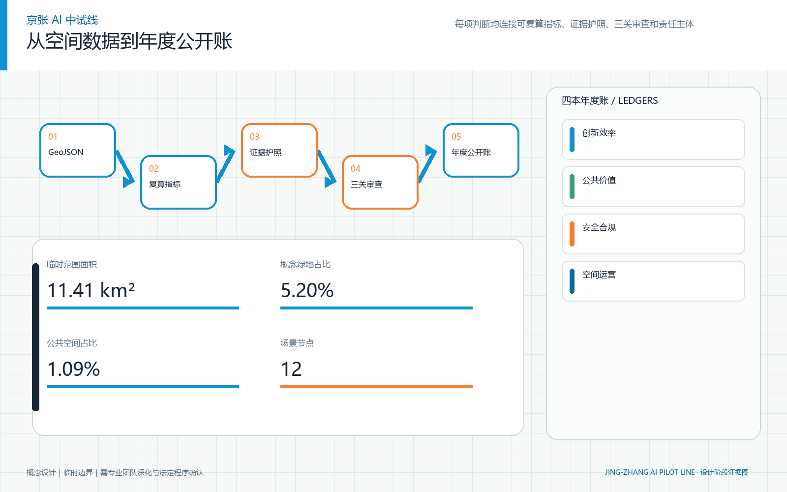

产业生态、人才画像、全球案例与未来城市机制
01 / SYSTEM
总览地图｜一线贯穿：从概念到交付

02 / SCOPE
三层范围，同一证据链
临时范围内的空间结构、用地、交通、蓝绿与实施
众智园、AI 原点、大钟寺三处空间原型与中试节点
03 / STATIONS
建筑与三站专业分工

众智园集成中试站
一脊·两环·四类试验院
把模型、硬件、数据与安全能力装配为可进入真实场景的系统。
北京 AI 原点可信共测站
一街·三接口·六类微院
让居民、研发者与公共服务人员在可暂停、可申诉的条件下共同验证公共价值。
大钟寺市场交付站
一站·四象限·一座交付客厅
把测试证据转译为采购、运维、培训、保险、退出与规模复制材料。
04 / LAND USE
用地分区｜完整、可复算的概念用地

05 / MOBILITY
交通慢行｜慢行与测试骨架

06 / INTERFACES
蓝绿公共空间与新型基础设施
中关村科技服务翼
连接知识产权、资本、专业服务与全球创新要素。
小月河场景赋能翼
提供开放场景、日常生活测试与连续公共空间体验。
工程合格证
核验可靠性、互操作、故障边界、能耗、端云协同与安全红队结果。
公共价值证
核验可解释性、公平、隐私、无障碍、人工接管、申诉与真实使用反馈。
交付就绪证
核验采购接口、运维手册、培训责任、保险衔接、复制与退出条件。
07 / DELIVERY
更新项目｜可逆更新与三阶段实施
0—12 个月：系统先行、轻量启动
建立联合办公室、完成基线、发布公开命题，以可移动构件启动三站。
12—36 个月：三站联动、证据成网
共享仪器、脚本和预约系统，开展年度红队测试与公众评议。
36 个月后：证据扩张、动态更新
复制已验证模块，退出低效或高风险场景，连接跨区域测试与采购伙伴。
08 / TESTS
AI 场景｜十二个可测试场景
多机协同试验院
完成规定任务且避让、急停、恢复和协同均达到预设测试口径。
现场操作员持有物理/软件急停权，异常时立即转人工并保留申诉入口。端云协同试验环
在断网、延迟和算力切换条件下保持可降级服务。
现场操作员持有物理/软件急停权，异常时立即转人工并保留申诉入口。安全红队与失效库
高风险路径被发现、复现、修复并在回归测试中关闭。
现场操作员持有物理/软件急停权，异常时立即转人工并保留申诉入口。开放标准工具链
不同团队可按相同脚本复现实验并识别许可责任。
现场操作员持有物理/软件急停权，异常时立即转人工并保留申诉入口。社区辅助共测院
使用者知情选择，辅助任务完成且人工服务始终可达。
现场操作员持有物理/软件急停权，异常时立即转人工并保留申诉入口。公共服务共测街
导航准确、来源可见、过期内容可发现且人工入口不降级。
现场操作员持有物理/软件急停权，异常时立即转人工并保留申诉入口。隐私与公平沙盒
偏差、泄露和不可解释差异可被检测并形成整改路径。
现场操作员持有物理/软件急停权，异常时立即转人工并保留申诉入口。用户研究微院
不同能力与年龄使用者可理解任务、撤回数据并获得结果反馈。
现场操作员持有物理/软件急停权，异常时立即转人工并保留申诉入口。终端体验与培训场
不同角色完成上手、异常处置和退出操作。
现场操作员持有物理/软件急停权，异常时立即转人工并保留申诉入口。城市产品交付厅
采购方可据同一证据判断适用边界、总成本和退出责任。
现场操作员持有物理/软件急停权，异常时立即转人工并保留申诉入口。合规翻译工作台
技术证据被翻译为可核验义务、控制、例外和人工责任。
现场操作员持有物理/软件急停权，异常时立即转人工并保留申诉入口。国际交付客厅
外部伙伴能区分可复制模块、待本地验证事项与不可迁移条件。
现场操作员持有物理/软件急停权，异常时立即转人工并保留申诉入口。09 / EVIDENCE
核心指标｜已知与待建立基线

10 / COVERAGE
任务覆盖｜标准与深度闭环
11 / QA
自检状态｜跨层自检
Repository provisional boundary is preserved and explicitly marked non-official.
All three key areas retain provisional status and taskbook IDs.
EPSG:4548 tests confirm full coverage and no material overlap.
Known spatial metrics are recomputed from submitted GeoJSON.
Complete Chinese and English companions exist for every required display artifact.
Both visual and report HTML pairs are offline, static and locally referenced.
Copyright, source provenance and excluded third-party media are documented.
All participant changes are confined to the declared proposal directory.
12 / SOURCES
来源状态
| ID | Status | Use |
|---|---|---|
| SITE-PACKAGE | official_public | Primary repository package for the brief, enums, allowed design space, standards and schemas. |
| SOURCE-REGISTRY | repository_public_registry | Distinguishes formal-ready, background-only, provisional-only and needs-review materials. |
| PROCESSED-FACT-PACK | repository_processed_reference | Navigation layer for scopes, requirements, evidence use and data gaps. |
| BOUNDARY-SOURCE | agent_inferred_from_public_data | Supplies the repository-maintained provisional site and three key-area polygons. |
| KEY-AREA-SOURCE | agent_inferred_from_public_data | Locates three required detailed-design areas for conceptual design and intake review. |
| OFFICIAL-ANNOUNCEMENT | official_public | Official project objective, three scope levels, three key areas, tasks and deliverable context. |
| AGENT-TASKBOOK | user_provided_cleared | Agent co-creation principles, six agent tasks, scenario, branding, operation and boundary clauses. |
| CASE-ONE-NORTH | official_public | Mechanism comparison only: Translate into three specialized stations, shared tools and modular launch space without importing project scale. |
| CASE-PARIS-SACLAY | official_public | Mechanism comparison only: Co-build pilot facilities with housing, mobility, public services and everyday urban life. |
| CASE-HAZELWOOD-RIC | official_public | Mechanism comparison only: Combine Jing-Zhang industrial memory, robotics piloting and public learning without copying external form. |
| CASE-KNOWLEDGE-QUARTER | official_public | Mechanism comparison only: Connect existing institutions through a joint office, annual events and resource recognition rather than one mega-campus. |
| CASE-MARS | official_public | Mechanism comparison only: Embed professional services, market connections and impact evaluation in the delivery station. |
| CASE-TAIPEI-LIVING-LAB | official_public | Mechanism comparison only: Form a full loop of open challenges, site admission, evidence records and exit mechanisms. |
13 / GAPS
假设｜专业资料缺口
Official precise site and key-area polygons are unavailable.
Replace geometry, recompute every dependent metric and regenerate all artifacts after cleared official files arrive.Approved land-use, FAR, height and other regulatory controls are unavailable.
Reconcile the design with approved planning conditions and update the standard/depth matrices.Official road redlines, junction geometry, transit interfaces and parking requirements are unavailable.
Replace with surveyed/approved networks and rerun accessibility, length and conflict checks.Parcel ownership, tenure and implementation rights are unavailable.
Overlay cleared cadastral and ownership records and establish rights before project approval.A surveyed existing-building inventory and engineering condition assessment are unavailable.
Complete survey and structural assessment, then classify retain, renovate and remove building by building.Verified municipal capacity, underground utilities and energy/carbon baselines are unavailable.
Obtain utility surveys and operator capacity letters, then test loads and revise phasing.Precise heritage protection boundaries and conservation requirements are unavailable.
Overlay official heritage files and obtain conservation review before physical intervention.Investment, procurement, operator commitment and approved construction schedules are unavailable.
Establish business case, accountable operators, procurement route and approved programme before delivery.14 / OPEN CALL
公开命题：让失败也成为公共知识
年度公开命题不是一次性活动，而是问题发布、准入测试、证据登记、失败整改、复测与退出的连续机制。首期只公布真实基线，不用承诺数字替代运营证据。